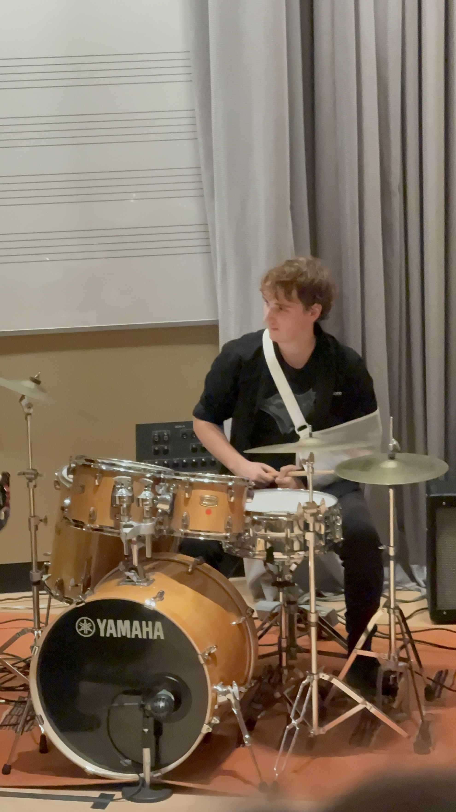
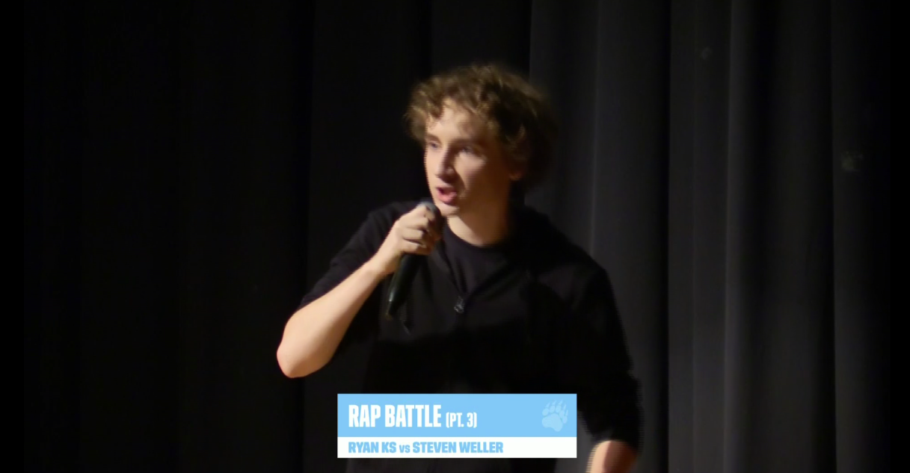

Ryan Kite Smith is a drummer, percussionist and aspiring DJ/producer from Etobicoke. Ryan is versatile playing with rock bands, jazz bands and full orchestras in a variety of genres and styles from Funk to Mambos Ryan is equipped to do it all. He is currently studying at the University of Guelph for a B.A in Music collaborating with a variety of local artists and fellow students in performances and releases.



Please enjoy some new popular music that came out last week and is now also my favorite song ☺☺☺
Are you not sure what to buy? Check out some of our BESTSELLERS! These items have more than 1,000 items sold!


Q: Technology is pointless why should I buy into this >:(
A: Thats not true! Technology is very useful and can help people in many aspects of life such as entertainment or medicine!
Q: Technology and computers are very cool! :O Whats the BEST computer in the world!?
A: Just last week a computer called "Deep Blue" won in a game of chess against the world's best player Gary Kasparov! Soon computers will be able to do anything a human can do!
Q: Did OJ Do it?
http://www.cnn.com/US/OJ/ Q: Considering the trial only opened last week it is hard to know. Please visit: http://www.cnn.com/US/OJ/ for more info
Ryan Kite Smith is a drummer, percussionist, and aspiring DJ/producer from Etobicoke whose musical identity is defined by both versatility and curiosity. Equally comfortable behind a full drum kit, a set of congas, or electronic production software, Ryan has developed a reputation for adapting seamlessly across musical contexts. From driving the energy of rock bands to navigating the intricate phrasing of jazz ensembles and supporting the dynamic range of full orchestras, his playing reflects a deep understanding of rhythm and texture. Drawing inspiration from genres as diverse as funk, mambo, hip-hop, and electronic music, Ryan approaches each performance with a blend of technical precision and expressive creativity. His ability to move fluidly between traditional percussion and modern production tools allows him to bridge the gap between live performance and digital sound design. Currently pursuing a Bachelor of Arts in Music at the University of Guelph, Ryan is actively involved in the local music scene, collaborating with fellow students and artists on both live performances and recorded projects. He has contributed to a range of campus ensembles and independent releases, often taking on roles that extend beyond drumming into arrangement and production. Known among his peers for his work ethic and openness to experimentation, Ryan is constantly refining his craft, whether that means studying complex rhythmic traditions, producing tracks in his home studio, or performing at local venues and events. As he continues to grow as both a musician and producer, Ryan aims to carve out a unique artistic voice that blends his diverse influences into a cohesive and forward-thinking sound.
Programmed from scratch in HTML5 and CSS.
Github